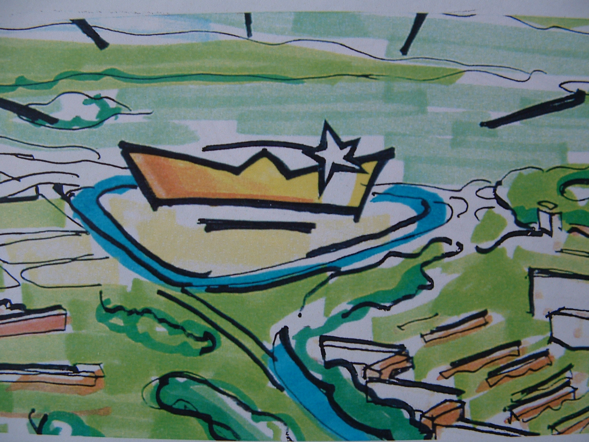
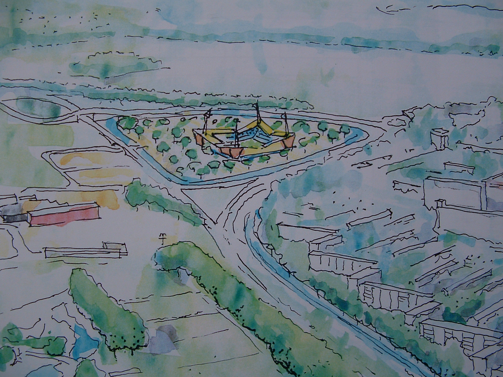
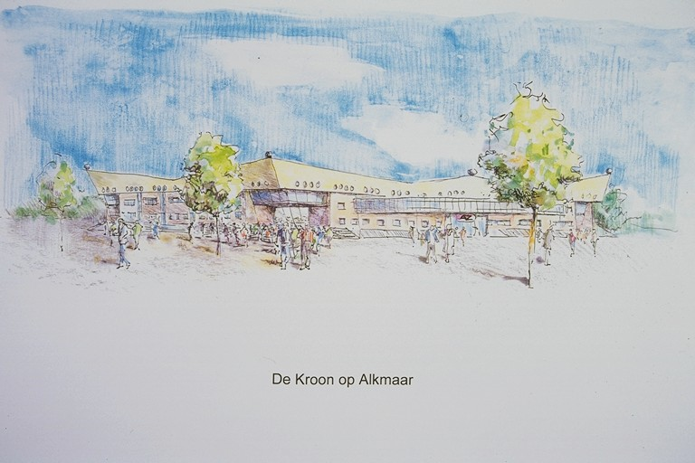

<%@ Page Title="" Language="C#" MasterPageFile="~/BagSite.Master" AutoEventWireup="true" CodeBehind="AZ.aspx.cs" Inherits="website.AZ" %>
<asp:Content ID="Content1" ContentPlaceHolderID="ContentPlaceHolder1" runat="server">
    <!-- page-banner-section 
			================================================== -->
		 <section class="page-banner-section" style="background: #111 url('/upload/portfolio/AZ/DSCF4317.JPG') center center; padding: 200px 0 150px; background-size: cover; text-align: center;  ">
        <%----%>
        <div class="container">
            <h1>AZ Stadion</h1>
        </div>
    </section>
		<!-- End banner section -->

		<!-- content-section 
			================================================== -->
		<section id="content-section">
			<div class="container">
						
				<!-- single-project -->
				<div class="single-project">
					<div class="row">
						<div class="col-md-6 col-lg-7">
						    
                            
                            
						</div>
						<div class="col-md-6 col-lg-5">
							<div class="project-details">
								<p>In opdracht van Hillen en Roosen is van 1998 t/m 2000 gewerkt aan een nieuw multifunctioneel voetbalstadion voor AZ te Alkmaar.
De plannen die steeds op basis van de metafoor ‘De kroon op Alkmaar’ zijn uitgewerkt, zijn zonder uitzondering zeer goed ontvangen.</p>
								<div class="project-list-box">
								
								</div>
								<div class="share-box">
									
								</div>
							</div>
						</div>
					</div>

				</div>
				<!-- End single-project -->

			</div>
		</section>
		<!-- End content section -->
</asp:Content>
